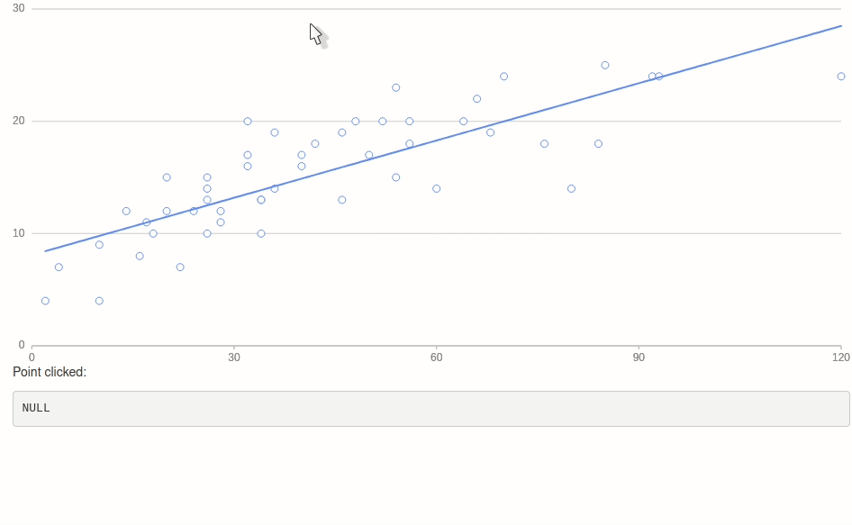

g2r is well integrated with shiny, nearly every function of the package can be used on a g2_proxy for smooth shiny transitions.
Proxy
A quick word on the aforementioned “proxy.” A proxy is a representation of an already drawn plot and allows dynamically interacting with the plot. This only works in shiny.
Proxies enable changing aspects of the charts on the fly to add a figure, or remove one for instance. This can of course be done without the use of proxy but then one is likely redrawing the entire chart instead of just adding a single figure, this is less performant and visually less pleasing (animations, etc.).
Add Figures
To dynamically add one or more figures by creating a proxy with g2_proxy: the function is identical to g2 except it takes the id of the plot it must proxy as first argument.
Finally, use the render function on the proxy to render the changes, additions, deletions, etc. This allows executing multiple actions at one.
library(g2r)
library(shiny)
df <- data.frame(
x = 1:100,
y = runif(100)
)
ui <- fluidPage(
actionButton("add", "add figure"),
g2Output("plot")
)
server <- function(input, output){
output$plot <- renderG2({
g2(df, asp(x, y)) %>%
fig_point()
})
observeEvent(input$add, {
dat <- data.frame(
x = 1:100,
y = runif(100)
)
g2_proxy("plot", data = dat) %>%
fig_point(asp(x, y, shape = "circle")) %>%
render()
})
}
shinyApp(ui, server)
Update Figures
To update figures one must make use of the config function to assign a unique identifier to a figure, then refer the same id in the proxy.
library(g2r)
library(shiny)
df <- data.frame(
x = 1:100,
y = runif(100, 10, 20),
z = runif(100, 15, 22)
)
ui <- fluidPage(
actionButton("update", "Update"),
g2Output("plot")
)
server <- function(input, output){
output$plot <- renderG2({
g2(df, asp(x, y)) %>%
fig_point(config("hello")) %>%
fig_point(
asp(y = z, shape = "circle"),
config("world")
)
})
observeEvent(input$update, {
dat <- data.frame(
x = 1:100,
y = runif(100, 10, 20),
z = runif(100, 15, 22)
)
g2_proxy("plot", asp(x, y), data = dat) %>%
fig_point(config("hello")) %>%
fig_point(
asp(y = z, shape = "circle"),
config("world")
) %>%
render()
})
}
shinyApp(ui, server)
Remove Figure
Figures can be removed from the visualisation with remove_figure; it takes either the numeric index of the figure (layer number) or the name/id of the figure (as set by config).
library(shiny)
df <- data.frame(
x = 1:100,
a = runif(100),
b = runif(100),
c = runif(100)
)
ui <- fluidPage(
actionButton("rm", "remove a figure"),
g2Output("plot")
)
server <- function(input, output){
output$plot <- renderG2({
g2(df, asp(x, shape = "circle")) %>%
fig_point(asp(y = a, color = "#ffadad")) %>%
fig_point(asp(y = b, color = "#a0c4ff")) %>%
fig_point(asp(y = c, color = "#ffc6ff"))
})
observeEvent(input$rm, {
i <- sample(1:3, 1)
g2_proxy("plot") %>%
remove_figure(i)
})
}
shinyApp(ui, server)
Events
The improve performances, events are not captured by default. These can be handled with the capture_event function. There are a large number of events that can be observed, they are listed in the official documentation.
The capture_event function accepts three arguments, the plot objects, the event to observe, and the callback function to run when the event is triggered. The events available are listed on the official documentation.
If the callback function is NULL (default) then one that sets a shiny input is generated. The shiny input it generates is the id of the plot followed by the name of the event (where : is replaced with _). For instance, a point click event (point:click) for the plot with an id of plotty will be available at the following input: input$plotty_point_click.
library(g2r)
library(shiny)
ui <- fluidPage(
g2Output("g2plot"),
p("Point clicked:"),
verbatimTextOutput("clicked")
)
server <- function(input, output){
output$g2plot <- renderG2({
g2(cars, asp(dist, speed)) %>%
fig_point() %>%
fig_smooth() %>%
capture_event("element:click")
})
output$clicked <- renderPrint({
print(input$g2plot_element_click)
})
}
shinyApp(ui, server)
JavaScript
Note that those events are always fired and can thus be used outside of Shiny: clicking a point on the chart below shows an alert.
alert <- htmlwidgets::JS(
"(ev) => {
alert('You clicked a point with speed:' + ev.data.data.speed)
}"
)
g2(cars, asp(speed, dist)) %>%
fig_point() %>%
capture_event("point:click", alert)